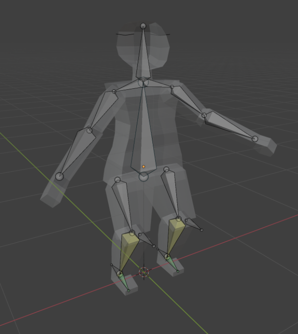

Aesthetic considerations are the way the character looks overall - its colours, style, and shape. This is important because, well, it's the way the character looks. This is what the end-user is likely examining in the finished product, and what the first impression of the character is. I have addressed this in my character by ensuring my character looks a little unique; I made them lanky and with a distinct shape so they stand out. Functionality consideration ensures that the character works as intended - whether that is to do with the model itself, its rigging, or its animations. This is important because nobody wants a non-functioning or glitchy character due it looking a lot better if it works without any error. I will ensure functionality has been considered when it comes to my character as I will organise my character's parts in a straight-forward, named way, so rigging is an easy taks and anybody looking into my model will be able to clearly see what's going on with it. Usability consideration affects how players understand the character, and their use in the game world that I will be putting them in. This is addressed with my relatively simple, stylized character - highlighting and bringing out the most important features. Intellectual Property is the last thing we need to consider, which is protection from stealing ideas. This is already covered - this character, while taking inspiration from certain characters such as Frieren or Caitlyn, still is my original character for my DND campagin - so I do not need to worry about infringing on others' intellectual property. This character is my own intellectual property because I have created it and they are distinctive and unique.